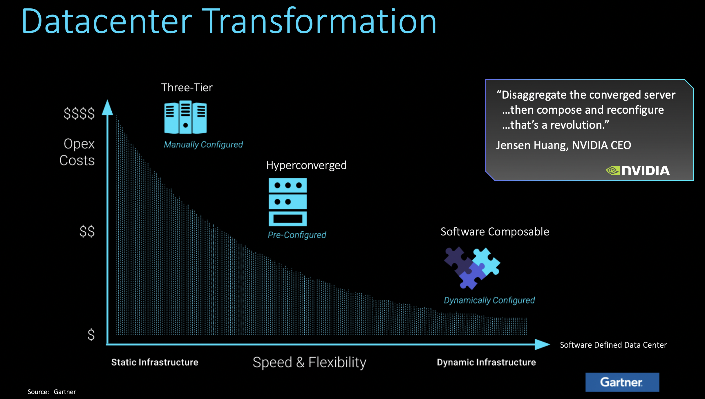
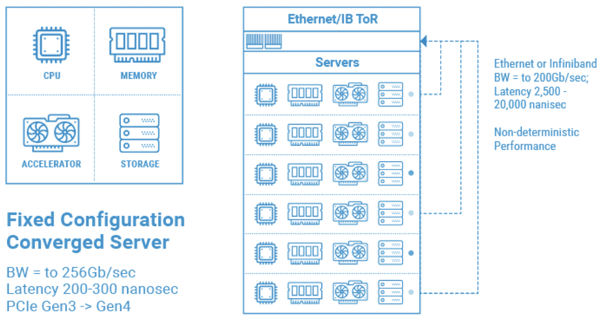
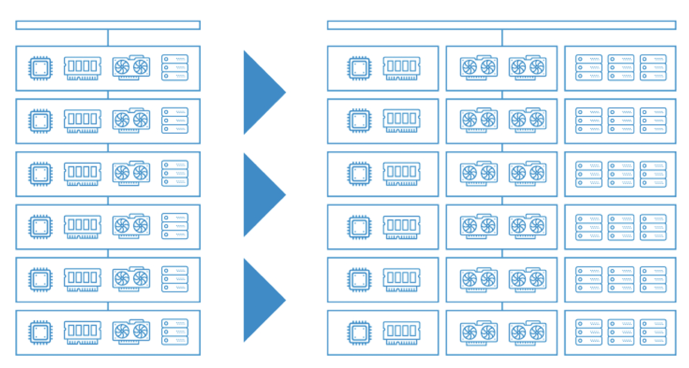
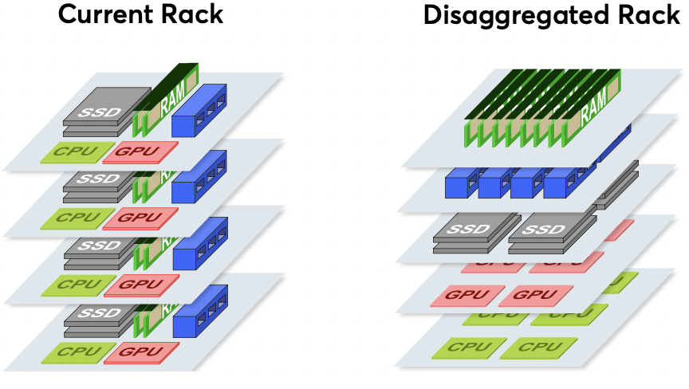
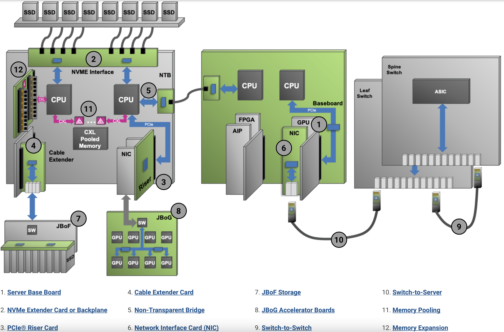

Insight of Next Generation Computation Architecture

Key Points
Mainframe decomposed to Server, Server will be decomposed to Component Pools(CPU, storage, memory, GPU, etc.), Data Center will be refactored: Infrastructure as Code (Software Defined Data Center).
Figure 1. Gartner’s Datacenter Transformation

Key Facts
- Standards: CXL: Compute Express Link, THE CXL ROADMAP OPENS UP THE MEMORY HIERARCHY, DMTF Redfish
- Researches
- OSDI ‘18 LegoOS: A Disseminated, Distributed OS for Hardware Resource Disaggregation, Slides Page 10 lists all resource disaggregation attemps
- WORD ‘19: The First Workshop on Resource Disaggregation UC Berkeley’s The Serverless Data Center: Hardware Disaggregation Meets Serverless Computing
- VLDB ‘20: Understanding the Effect of Data Center Resource Disaggregation on Production DBMSs, VLDB: Very Large Data Bases
- SC ‘20: Towards Modular SupercomputingResource Disaggregation and Virtualization by Network-Attached Accelerators
- WORDS ‘21: The Second Workshop On Resource Disaggregation and Serverless
- ASPLOS ‘22 Clio: A Hardware-Software Co-Designed Disaggregated Memory System
- Startups:
- 2015 AyarLabs: Disaggregating System Architectures for Future HPC and AI Workloads
- 2016 LIQID, Disaggregate and Compose Your Datacenter
- 2017 MemVerge, Hello VMware, and Welcome to the Big Memory Party!
- 2017 Astera Labs, Data Center Resource Disaggregation Drives Need for Cost- Effective 400/800-GbE Interconnects
- 2017 GIGAIO, Rack-Scale Composable Infrastructure
- Giants
- HPC Asia 2018: IBM’s Towards a composable computer system
- VMware vmworld 2021: published Project Capitola, Introducing VMware Project Capitola: Unbounding the ‘Memory Bound’, VMWARE STRETCHES ESXI TO BE A DISAGGREGATED MEMORY HYPERVISOR
- RESDIS ‘22: 1st International Workshop on RESource DISaggregation in High-Performance Computing
Summary
The base and most important step: low latency link protocal (network) is ready (Standard & Startups), Software for disaggreated is the opportunity. Architecture bird view from Figure 2 to Figure 5.
Figure 2. Rack Architecture Today 2 Decades Old

Figure 3. Eliminating Staranded Resources, Disaggregation Architecture

Figure 4. Disaggregated rack

Figure 5. A Transition Use Cases

IBM z Series, an unintentional attempt of resource disaggregation
- ABCs of z/OS System Programming Volume 10 Chapter 1.4 System components, Figure 1-4 System components
- Explore and make use of the advanced capabilities of the IBM z15, IBM z15 Technical Introduction, Chapter 5.2 Virtualization, Figure 5-1 Virtualization on the IBM Z platform